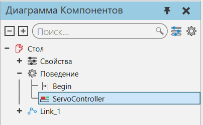

Назначение соединения контроллеру |
|
Соединение узла может быть назначено поведению робота или сервоконтроллера, таким образом, движение этого соединения может управляться контроллером. 1.В трехмерном мире выберите компонент. 2.Нажмите на вкладку Моделирование , а затем в панели Диаграмма компонента в Дереве узлов компонента, найдите поведение типа контроллер, которому вы хотите назначить соединения, а затем выберите это поведение.  3.На панели Свойства, выберите Соединения и затем сделайте одно из следующих действий: ·Чтобы выбрать соединение, в поле Соединения, нажмите кнопку Выбирать, а затем в трехмерном мире щелкните узел этого соединения. ·Чтобы добавить соединение, в поле Соединения, нажмите ЗНАК ПЛЮС, а затем в Добавить элементы «Соединения» , найдите и выберите этот сустав. Если соединение выделено, это означает, что соединение уже добавлено в свойство «Соединения» контроллера. ·Чтобы изменить порядок добавления сустава, в поле Соединения, укажите на этот сустав, а затем справа от этого поля используйте стрелки Вверх и Вниз . ·Чтобы удалить добавленный сустав,в поле Соединения, укажите на это соединение, а затем справа от этого поля щелкните значок Мусорная корзина. После того, как соединение назначено контроллеру, оно наследует свойства, которые необходимо определить, чтобы соединение управлялось контроллером. 4.На панели Диаграмма компонента в Дереве узлов компонента, сверните Поведение и Свойства. Это означает, что в дереве будут показаны только узлы компонента. 5.В Дереве узлов компонента, выберите узел, соединение которого вы назначили контроллеру, а затем на панели Свойства, выполните следующие действия: ·Для того, чтобы сустав имел правильные скорости и ускорения при движении, установите Максимальную скорость , Максимальное ускорение и Максимальное замедление. ·Для того, чтобы сустав занимал правильные конечные положения, установите Минимальный предел и Максимальный предел |